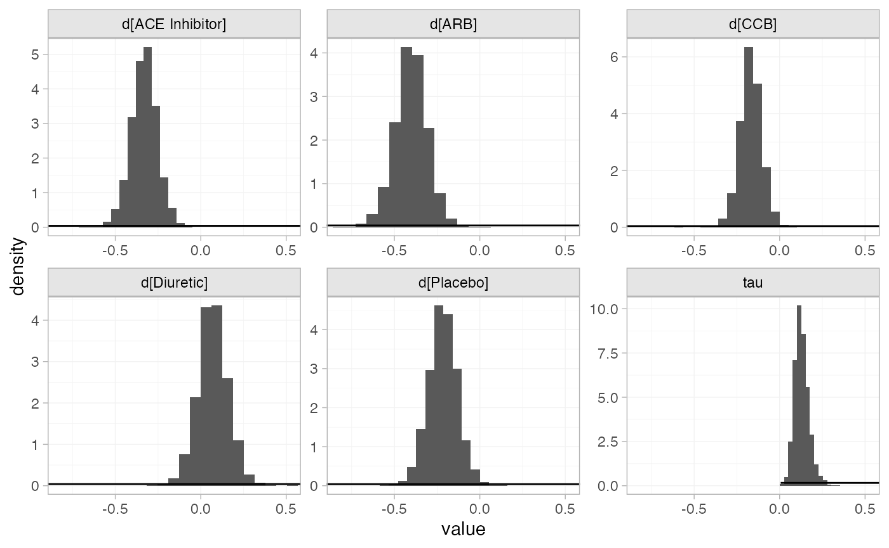

library(multinma)
options(mc.cores = parallel::detectCores())#> For execution on a local, multicore CPU with excess RAM we recommend calling
#> options(mc.cores = parallel::detectCores())
#>
#> Attaching package: 'multinma'
#> The following objects are masked from 'package:stats':
#>
#> dgamma, pgamma, qgammaThis vignette describes the analysis of data on the number of new cases of diabetes in 22 trials of 6 antihypertensive drugs (Elliott and Meyer 2007; Dias et al. 2011). The data are available in this package as diabetes:
head(diabetes)
#> studyn studyc trtn trtc r n time
#> 1 1 MRC-E 1 Diuretic 43 1081 5.8
#> 2 1 MRC-E 2 Placebo 34 2213 5.8
#> 3 1 MRC-E 3 Beta Blocker 37 1102 5.8
#> 4 2 EWPH 1 Diuretic 29 416 4.7
#> 5 2 EWPH 2 Placebo 20 424 4.7
#> 6 3 SHEP 1 Diuretic 140 1631 3.0Setting up the network
We begin by setting up the network. We have arm-level count data giving the number of new cases of diabetes (r) out of the total (n) in each arm, so we use the function set_agd_arm(). For computational efficiency, we let “Beta Blocker” be set as the network reference treatment by default. Elliott and Meyer (2007) and Dias et al. (2011) use “Diuretic” as the reference, but it is a simple matter to transform the results after fitting the NMA model.1
db_net <- set_agd_arm(diabetes,
study = studyc,
trt = trtc,
r = r,
n = n)
db_net
#> A network with 22 AgD studies (arm-based).
#>
#> ------------------------------------------------------- AgD studies (arm-based) ----
#> Study Treatments
#> AASK 3: Beta Blocker | CCB | ACE Inhibitor
#> ALLHAT 3: Diuretic | CCB | ACE Inhibitor
#> ALPINE 2: Diuretic | ARB
#> ANBP-2 2: Diuretic | ACE Inhibitor
#> ASCOT 2: Beta Blocker | CCB
#> CAPPP 2: Beta Blocker | ACE Inhibitor
#> CHARM 2: Placebo | ARB
#> DREAM 2: Placebo | ACE Inhibitor
#> EWPH 2: Diuretic | Placebo
#> FEVER 2: Placebo | CCB
#> ... plus 12 more studies
#>
#> Outcome type: count
#> ------------------------------------------------------------------------------------
#> Total number of treatments: 6
#> Total number of studies: 22
#> Reference treatment is: Beta Blocker
#> Network is connectedWe also have details of length of follow-up in years in each trial (time), which we will use as an offset with a cloglog link function to model the data as rates. We do not have to specify this in the function set_agd_arm(): any additional columns in the data (e.g. offsets or covariates, here the column time) will automatically be made available in the network.
Plot the network structure.
plot(db_net, weight_edges = TRUE, weight_nodes = TRUE)
Meta-analysis models
We fit both fixed effect (FE) and random effects (RE) models.
Fixed effect meta-analysis
First, we fit a fixed effect model using the nma() function with trt_effects = "fixed". We use \(\mathrm{N}(0, 100^2)\) prior distributions for the treatment effects \(d_k\) and study-specific intercepts \(\mu_j\). We can examine the range of parameter values implied by these prior distributions with the summary() method:
summary(normal(scale = 100))
#> A Normal prior distribution: location = 0, scale = 100.
#> 50% of the prior density lies between -67.45 and 67.45.
#> 95% of the prior density lies between -196 and 196.The model is fitted using the nma() function. We specify that a cloglog link will be used with link = "cloglog" (the Binomial likelihood is the default for these data), and specify the log follow-up time offset using the regression formula regression = ~offset(log(time)).
db_fit_FE <- nma(db_net,
trt_effects = "fixed",
link = "cloglog",
regression = ~offset(log(time)),
prior_intercept = normal(scale = 100),
prior_trt = normal(scale = 100))
#> Note: No treatment classes specified in network, any interactions in `regression` formula will be separate (independent) for each treatment.
#> Use set_*() argument `trt_class` and nma() argument `class_interactions` to change this.
#> Note: Setting "Beta Blocker" as the network reference treatment.Basic parameter summaries are given by the print() method:
db_fit_FE
#> A fixed effects NMA with a binomial likelihood (cloglog link).
#> Regression model: ~offset(log(time)).
#> Inference for Stan model: binomial_1par.
#> 4 chains, each with iter=2000; warmup=1000; thin=1;
#> post-warmup draws per chain=1000, total post-warmup draws=4000.
#>
#> mean se_mean sd 2.5% 25% 50% 75% 97.5% n_eff
#> d[ACE Inhibitor] -0.30 0.00 0.05 -0.39 -0.33 -0.30 -0.27 -0.21 1648
#> d[ARB] -0.40 0.00 0.05 -0.49 -0.43 -0.39 -0.37 -0.30 2430
#> d[CCB] -0.20 0.00 0.03 -0.26 -0.22 -0.20 -0.17 -0.13 2248
#> d[Diuretic] 0.06 0.00 0.06 -0.05 0.02 0.06 0.10 0.17 1783
#> d[Placebo] -0.19 0.00 0.05 -0.29 -0.22 -0.19 -0.16 -0.09 1552
#> lp__ -37970.47 0.09 3.71 -37978.50 -37972.73 -37970.19 -37967.86 -37964.12 1651
#> Rhat
#> d[ACE Inhibitor] 1
#> d[ARB] 1
#> d[CCB] 1
#> d[Diuretic] 1
#> d[Placebo] 1
#> lp__ 1
#>
#> Samples were drawn using NUTS(diag_e) at Wed Dec 2 11:13:47 2020.
#> For each parameter, n_eff is a crude measure of effective sample size,
#> and Rhat is the potential scale reduction factor on split chains (at
#> convergence, Rhat=1).By default, summaries of the study-specific intercepts \(\mu_j\) are hidden, but could be examined by changing the pars argument:
The prior and posterior distributions can be compared visually using the plot_prior_posterior() function:
plot_prior_posterior(db_fit_FE)
Random effects meta-analysis
We now fit a random effects model using the nma() function with trt_effects = "random". Again, we use \(\mathrm{N}(0, 100^2)\) prior distributions for the treatment effects \(d_k\) and study-specific intercepts \(\mu_j\), and we additionally use a \(\textrm{half-N}(5^2)\) prior for the heterogeneity standard deviation \(\tau\). We can examine the range of parameter values implied by these prior distributions with the summary() method:
summary(normal(scale = 100))
#> A Normal prior distribution: location = 0, scale = 100.
#> 50% of the prior density lies between -67.45 and 67.45.
#> 95% of the prior density lies between -196 and 196.
summary(half_normal(scale = 5))
#> A half-Normal prior distribution: location = 0, scale = 5.
#> 50% of the prior density lies between 0 and 3.37.
#> 95% of the prior density lies between 0 and 9.8.Fitting the RE model
db_fit_RE <- nma(db_net,
trt_effects = "random",
link = "cloglog",
regression = ~offset(log(time)),
prior_intercept = normal(scale = 10),
prior_trt = normal(scale = 10),
prior_het = half_normal(scale = 5),
init_r = 0.5)
#> Note: No treatment classes specified in network, any interactions in `regression` formula will be separate (independent) for each treatment.
#> Use set_*() argument `trt_class` and nma() argument `class_interactions` to change this.
#> Note: Setting "Beta Blocker" as the network reference treatment.Basic parameter summaries are given by the print() method:
db_fit_RE
#> A random effects NMA with a binomial likelihood (cloglog link).
#> Regression model: ~offset(log(time)).
#> Inference for Stan model: binomial_1par.
#> 4 chains, each with iter=2000; warmup=1000; thin=1;
#> post-warmup draws per chain=1000, total post-warmup draws=4000.
#>
#> mean se_mean sd 2.5% 25% 50% 75% 97.5% n_eff
#> d[ACE Inhibitor] -0.33 0.00 0.08 -0.49 -0.38 -0.33 -0.28 -0.17 1586
#> d[ARB] -0.40 0.00 0.10 -0.61 -0.46 -0.40 -0.34 -0.22 1872
#> d[CCB] -0.17 0.00 0.07 -0.30 -0.21 -0.17 -0.12 -0.03 1476
#> d[Diuretic] 0.07 0.00 0.09 -0.10 0.01 0.07 0.13 0.26 1837
#> d[Placebo] -0.21 0.00 0.09 -0.40 -0.27 -0.21 -0.16 -0.04 1277
#> lp__ -37980.99 0.28 7.13 -37996.24 -37985.56 -37980.55 -37976.15 -37967.97 641
#> tau 0.13 0.00 0.05 0.05 0.10 0.12 0.15 0.24 616
#> Rhat
#> d[ACE Inhibitor] 1.00
#> d[ARB] 1.00
#> d[CCB] 1.00
#> d[Diuretic] 1.00
#> d[Placebo] 1.00
#> lp__ 1.00
#> tau 1.01
#>
#> Samples were drawn using NUTS(diag_e) at Wed Dec 2 11:14:03 2020.
#> For each parameter, n_eff is a crude measure of effective sample size,
#> and Rhat is the potential scale reduction factor on split chains (at
#> convergence, Rhat=1).By default, summaries of the study-specific intercepts \(\mu_j\) and study-specific relative effects \(\delta_{jk}\) are hidden, but could be examined by changing the pars argument:
The prior and posterior distributions can be compared visually using the plot_prior_posterior() function:
plot_prior_posterior(db_fit_RE, prior = c("trt", "het"))
Model comparison
Model fit can be checked using the dic() function:
(dic_FE <- dic(db_fit_FE))
#> Residual deviance: 78.5 (on 48 data points)
#> pD: 27.3
#> DIC: 105.9
(dic_RE <- dic(db_fit_RE))
#> Residual deviance: 53.9 (on 48 data points)
#> pD: 38.3
#> DIC: 92.1The FE model is a very poor fit to the data, with a residual deviance much higher than the number of data points. The RE model fits the data better, and has a much lower DIC; we prefer the RE model.
We can also examine the residual deviance contributions with the corresponding plot() method.
plot(dic_FE)
plot(dic_RE)
Further results
For comparison with Elliott and Meyer (2007) and Dias et al. (2011), we can produce relative effects against “Diuretic” using the relative_effects() function with trt_ref = "Diuretic":
(db_releff_FE <- relative_effects(db_fit_FE, trt_ref = "Diuretic"))
#> mean sd 2.5% 25% 50% 75% 97.5% Bulk_ESS Tail_ESS Rhat
#> d[Beta Blocker] -0.06 0.06 -0.17 -0.10 -0.06 -0.02 0.05 1790 2621 1
#> d[ACE Inhibitor] -0.36 0.05 -0.46 -0.40 -0.36 -0.32 -0.26 4236 3580 1
#> d[ARB] -0.45 0.06 -0.58 -0.50 -0.45 -0.41 -0.33 3349 2923 1
#> d[CCB] -0.25 0.05 -0.36 -0.29 -0.25 -0.22 -0.15 2841 2682 1
#> d[Placebo] -0.25 0.06 -0.35 -0.28 -0.25 -0.21 -0.14 4325 3082 1
plot(db_releff_FE, ref_line = 0)
(db_releff_RE <- relative_effects(db_fit_RE, trt_ref = "Diuretic"))
#> mean sd 2.5% 25% 50% 75% 97.5% Bulk_ESS Tail_ESS Rhat
#> d[Beta Blocker] -0.07 0.09 -0.26 -0.13 -0.07 -0.01 0.10 1875 1913 1
#> d[ACE Inhibitor] -0.40 0.09 -0.59 -0.46 -0.40 -0.34 -0.24 4522 2937 1
#> d[ARB] -0.47 0.11 -0.70 -0.54 -0.47 -0.40 -0.27 4272 2576 1
#> d[CCB] -0.24 0.09 -0.41 -0.30 -0.24 -0.18 -0.07 4141 2983 1
#> d[Placebo] -0.29 0.09 -0.47 -0.34 -0.29 -0.22 -0.11 3564 2632 1
plot(db_releff_RE, ref_line = 0)
Dias et al. (2011) produce absolute predictions of the probability of developing diabetes after three years, assuming a Normal distribution on the baseline cloglog probability of developing diabetes on diuretic treatment with mean \(-4.2\) and precision \(1.11\). We can replicate these results using the predict() method. We specify a data frame of newdata, containing the time offset(s) at which to produce predictions (here only 3 years). The baseline argument takes a distr() distribution object with which we specify the corresponding Normal distribution on the baseline cloglog probability, and we set trt_ref = "Diuretic" to indicate that the baseline distribution corresponds to “Diuretic” rather than the network reference “Beta Blocker”. We set type = "response" to produce predicted event probabilities (type = "link" would produce predicted cloglog probabilities).
db_pred_FE <- predict(db_fit_FE,
newdata = data.frame(time = 3),
baseline = distr(qnorm, mean = -4.2, sd = 1.11^-0.5),
trt_ref = "Diuretic",
type = "response")
db_pred_FE
#> ------------------------------------------------------------------ Study: New 1 ----
#>
#> mean sd 2.5% 25% 50% 75% 97.5% Bulk_ESS Tail_ESS Rhat
#> pred[New 1: Beta Blocker] 0.06 0.07 0.01 0.02 0.04 0.08 0.24 3859 3721 1
#> pred[New 1: ACE Inhibitor] 0.05 0.06 0.00 0.02 0.03 0.06 0.19 3875 3797 1
#> pred[New 1: ARB] 0.04 0.05 0.00 0.01 0.03 0.05 0.17 3865 3721 1
#> pred[New 1: CCB] 0.05 0.06 0.01 0.02 0.03 0.06 0.21 3865 3757 1
#> pred[New 1: Diuretic] 0.07 0.07 0.01 0.02 0.04 0.08 0.26 3872 3723 1
#> pred[New 1: Placebo] 0.05 0.06 0.01 0.02 0.03 0.06 0.21 3884 3759 1
plot(db_pred_FE)
db_pred_RE <- predict(db_fit_RE,
newdata = data.frame(time = 3),
baseline = distr(qnorm, mean = -4.2, sd = 1.11^-0.5),
trt_ref = "Diuretic",
type = "response")
db_pred_RE
#> ------------------------------------------------------------------ Study: New 1 ----
#>
#> mean sd 2.5% 25% 50% 75% 97.5% Bulk_ESS Tail_ESS Rhat
#> pred[New 1: Beta Blocker] 0.06 0.06 0.01 0.02 0.04 0.08 0.24 4028 3806 1
#> pred[New 1: ACE Inhibitor] 0.05 0.05 0.01 0.02 0.03 0.06 0.18 4033 3765 1
#> pred[New 1: ARB] 0.04 0.05 0.00 0.02 0.03 0.05 0.17 4044 3821 1
#> pred[New 1: CCB] 0.05 0.06 0.01 0.02 0.04 0.07 0.21 4073 3853 1
#> pred[New 1: Diuretic] 0.07 0.07 0.01 0.02 0.05 0.08 0.26 4046 3842 1
#> pred[New 1: Placebo] 0.05 0.05 0.01 0.02 0.03 0.06 0.20 4050 3814 1
plot(db_pred_RE)
If the baseline and newdata arguments are omitted, predicted probabilities will be produced for every study in the network based on their follow-up times and estimated baseline cloglog probabilities \(\mu_j\):
db_pred_RE_studies <- predict(db_fit_RE, type = "response")
db_pred_RE_studies
#> ------------------------------------------------------------------- Study: AASK ----
#>
#> mean sd 2.5% 25% 50% 75% 97.5% Bulk_ESS Tail_ESS Rhat
#> pred[AASK: Beta Blocker] 0.17 0.02 0.14 0.16 0.17 0.18 0.20 5337 3226 1
#> pred[AASK: ACE Inhibitor] 0.12 0.01 0.10 0.12 0.12 0.13 0.15 3609 3184 1
#> pred[AASK: ARB] 0.12 0.01 0.09 0.11 0.12 0.13 0.15 3952 2870 1
#> pred[AASK: CCB] 0.14 0.01 0.12 0.14 0.14 0.15 0.18 3923 3102 1
#> pred[AASK: Diuretic] 0.18 0.02 0.14 0.17 0.18 0.19 0.22 3441 2832 1
#> pred[AASK: Placebo] 0.14 0.02 0.11 0.13 0.14 0.15 0.17 3081 2618 1
#>
#> ----------------------------------------------------------------- Study: ALLHAT ----
#>
#> mean sd 2.5% 25% 50% 75% 97.5% Bulk_ESS Tail_ESS Rhat
#> pred[ALLHAT: Beta Blocker] 0.04 0.01 0.03 0.04 0.04 0.05 0.05 2251 2475 1
#> pred[ALLHAT: ACE Inhibitor] 0.03 0.00 0.02 0.03 0.03 0.03 0.04 3881 3185 1
#> pred[ALLHAT: ARB] 0.03 0.00 0.02 0.03 0.03 0.03 0.04 4139 2924 1
#> pred[ALLHAT: CCB] 0.04 0.00 0.03 0.03 0.04 0.04 0.05 3796 2750 1
#> pred[ALLHAT: Diuretic] 0.05 0.01 0.04 0.04 0.05 0.05 0.06 4517 2609 1
#> pred[ALLHAT: Placebo] 0.03 0.00 0.03 0.03 0.03 0.04 0.04 3921 2935 1
#>
#> ----------------------------------------------------------------- Study: ALPINE ----
#>
#> mean sd 2.5% 25% 50% 75% 97.5% Bulk_ESS Tail_ESS Rhat
#> pred[ALPINE: Beta Blocker] 0.03 0.01 0.01 0.02 0.03 0.03 0.05 6112 3146 1
#> pred[ALPINE: ACE Inhibitor] 0.02 0.01 0.01 0.01 0.02 0.02 0.03 7167 3037 1
#> pred[ALPINE: ARB] 0.02 0.01 0.01 0.01 0.02 0.02 0.03 7197 2999 1
#> pred[ALPINE: CCB] 0.02 0.01 0.01 0.02 0.02 0.03 0.04 7079 2956 1
#> pred[ALPINE: Diuretic] 0.03 0.01 0.01 0.02 0.03 0.03 0.05 7529 3011 1
#> pred[ALPINE: Placebo] 0.02 0.01 0.01 0.02 0.02 0.03 0.04 7250 3015 1
#>
#> ----------------------------------------------------------------- Study: ANBP-2 ----
#>
#> mean sd 2.5% 25% 50% 75% 97.5% Bulk_ESS Tail_ESS Rhat
#> pred[ANBP-2: Beta Blocker] 0.07 0.01 0.05 0.06 0.07 0.07 0.09 2758 2458 1
#> pred[ANBP-2: ACE Inhibitor] 0.05 0.01 0.04 0.04 0.05 0.05 0.06 4509 2785 1
#> pred[ANBP-2: ARB] 0.05 0.01 0.03 0.04 0.05 0.05 0.06 4084 2795 1
#> pred[ANBP-2: CCB] 0.06 0.01 0.04 0.05 0.06 0.06 0.08 4007 2702 1
#> pred[ANBP-2: Diuretic] 0.07 0.01 0.06 0.07 0.07 0.08 0.09 4382 2798 1
#> pred[ANBP-2: Placebo] 0.05 0.01 0.04 0.05 0.05 0.06 0.07 4205 2483 1
#>
#> ------------------------------------------------------------------ Study: ASCOT ----
#>
#> mean sd 2.5% 25% 50% 75% 97.5% Bulk_ESS Tail_ESS Rhat
#> pred[ASCOT: Beta Blocker] 0.11 0.00 0.10 0.11 0.11 0.11 0.12 4441 2678 1
#> pred[ASCOT: ACE Inhibitor] 0.08 0.01 0.07 0.08 0.08 0.09 0.10 1902 2295 1
#> pred[ASCOT: ARB] 0.08 0.01 0.06 0.07 0.08 0.08 0.09 2292 2582 1
#> pred[ASCOT: CCB] 0.10 0.01 0.08 0.09 0.10 0.10 0.11 1643 2415 1
#> pred[ASCOT: Diuretic] 0.12 0.01 0.10 0.11 0.12 0.13 0.14 2026 2389 1
#> pred[ASCOT: Placebo] 0.09 0.01 0.08 0.09 0.09 0.10 0.11 1460 1763 1
#>
#> ------------------------------------------------------------------ Study: CAPPP ----
#>
#> mean sd 2.5% 25% 50% 75% 97.5% Bulk_ESS Tail_ESS Rhat
#> pred[CAPPP: Beta Blocker] 0.07 0.00 0.07 0.07 0.07 0.08 0.08 4509 2667 1
#> pred[CAPPP: ACE Inhibitor] 0.05 0.00 0.05 0.05 0.05 0.06 0.06 1880 2142 1
#> pred[CAPPP: ARB] 0.05 0.01 0.04 0.05 0.05 0.05 0.06 2133 2098 1
#> pred[CAPPP: CCB] 0.06 0.00 0.05 0.06 0.06 0.07 0.07 2206 2142 1
#> pred[CAPPP: Diuretic] 0.08 0.01 0.07 0.08 0.08 0.09 0.10 2320 2559 1
#> pred[CAPPP: Placebo] 0.06 0.01 0.05 0.06 0.06 0.06 0.07 1504 1880 1
#>
#> ------------------------------------------------------------------ Study: CHARM ----
#>
#> mean sd 2.5% 25% 50% 75% 97.5% Bulk_ESS Tail_ESS Rhat
#> pred[CHARM: Beta Blocker] 0.09 0.01 0.07 0.08 0.09 0.10 0.12 2581 2025 1
#> pred[CHARM: ACE Inhibitor] 0.07 0.01 0.05 0.06 0.07 0.07 0.09 4092 2413 1
#> pred[CHARM: ARB] 0.06 0.01 0.05 0.06 0.06 0.07 0.08 4366 2514 1
#> pred[CHARM: CCB] 0.08 0.01 0.06 0.07 0.08 0.08 0.10 3476 2385 1
#> pred[CHARM: Diuretic] 0.10 0.01 0.07 0.09 0.10 0.10 0.13 3939 2437 1
#> pred[CHARM: Placebo] 0.07 0.01 0.06 0.07 0.07 0.08 0.09 4260 2432 1
#>
#> ------------------------------------------------------------------ Study: DREAM ----
#>
#> mean sd 2.5% 25% 50% 75% 97.5% Bulk_ESS Tail_ESS Rhat
#> pred[DREAM: Beta Blocker] 0.23 0.03 0.18 0.21 0.23 0.24 0.29 2222 2544 1
#> pred[DREAM: ACE Inhibitor] 0.17 0.02 0.13 0.16 0.17 0.18 0.21 3828 2848 1
#> pred[DREAM: ARB] 0.16 0.02 0.12 0.15 0.16 0.17 0.21 4264 2734 1
#> pred[DREAM: CCB] 0.20 0.03 0.15 0.18 0.20 0.21 0.25 3324 2581 1
#> pred[DREAM: Diuretic] 0.24 0.03 0.19 0.22 0.24 0.26 0.31 3914 2729 1
#> pred[DREAM: Placebo] 0.19 0.02 0.15 0.17 0.19 0.20 0.23 4582 2763 1
#>
#> ------------------------------------------------------------------- Study: EWPH ----
#>
#> mean sd 2.5% 25% 50% 75% 97.5% Bulk_ESS Tail_ESS Rhat
#> pred[EWPH: Beta Blocker] 0.06 0.01 0.04 0.05 0.06 0.07 0.09 3335 2514 1
#> pred[EWPH: ACE Inhibitor] 0.05 0.01 0.03 0.04 0.04 0.05 0.06 4616 2976 1
#> pred[EWPH: ARB] 0.04 0.01 0.03 0.04 0.04 0.05 0.06 4474 2930 1
#> pred[EWPH: CCB] 0.05 0.01 0.04 0.05 0.05 0.06 0.08 4264 2556 1
#> pred[EWPH: Diuretic] 0.07 0.01 0.05 0.06 0.07 0.07 0.09 4777 3333 1
#> pred[EWPH: Placebo] 0.05 0.01 0.03 0.04 0.05 0.06 0.07 4817 2941 1
#>
#> ------------------------------------------------------------------ Study: FEVER ----
#>
#> mean sd 2.5% 25% 50% 75% 97.5% Bulk_ESS Tail_ESS Rhat
#> pred[FEVER: Beta Blocker] 0.04 0.01 0.03 0.04 0.04 0.04 0.05 2034 2409 1
#> pred[FEVER: ACE Inhibitor] 0.03 0.00 0.02 0.03 0.03 0.03 0.04 3984 2864 1
#> pred[FEVER: ARB] 0.03 0.00 0.02 0.03 0.03 0.03 0.04 3973 2947 1
#> pred[FEVER: CCB] 0.04 0.00 0.03 0.03 0.03 0.04 0.05 3214 2467 1
#> pred[FEVER: Diuretic] 0.04 0.01 0.03 0.04 0.04 0.05 0.06 3675 2962 1
#> pred[FEVER: Placebo] 0.03 0.00 0.03 0.03 0.03 0.04 0.04 4044 2888 1
#>
#> ----------------------------------------------------------------- Study: HAPPHY ----
#>
#> mean sd 2.5% 25% 50% 75% 97.5% Bulk_ESS Tail_ESS Rhat
#> pred[HAPPHY: Beta Blocker] 0.02 0 0.02 0.02 0.02 0.03 0.03 5157 2796 1
#> pred[HAPPHY: ACE Inhibitor] 0.02 0 0.01 0.02 0.02 0.02 0.02 4060 3028 1
#> pred[HAPPHY: ARB] 0.02 0 0.01 0.02 0.02 0.02 0.02 4173 2951 1
#> pred[HAPPHY: CCB] 0.02 0 0.02 0.02 0.02 0.02 0.03 4231 3102 1
#> pred[HAPPHY: Diuretic] 0.03 0 0.02 0.02 0.03 0.03 0.03 3232 2562 1
#> pred[HAPPHY: Placebo] 0.02 0 0.02 0.02 0.02 0.02 0.03 3220 2945 1
#>
#> ------------------------------------------------------------------- Study: HOPE ----
#>
#> mean sd 2.5% 25% 50% 75% 97.5% Bulk_ESS Tail_ESS Rhat
#> pred[HOPE: Beta Blocker] 0.06 0.01 0.04 0.05 0.06 0.06 0.08 2543 2146 1
#> pred[HOPE: ACE Inhibitor] 0.04 0.01 0.03 0.04 0.04 0.05 0.06 4605 2835 1
#> pred[HOPE: ARB] 0.04 0.01 0.03 0.04 0.04 0.04 0.05 4537 2684 1
#> pred[HOPE: CCB] 0.05 0.01 0.04 0.04 0.05 0.05 0.07 4147 2689 1
#> pred[HOPE: Diuretic] 0.06 0.01 0.05 0.06 0.06 0.07 0.09 4397 2937 1
#> pred[HOPE: Placebo] 0.05 0.01 0.04 0.04 0.05 0.05 0.06 4658 2742 1
#>
#> ---------------------------------------------------------------- Study: INSIGHT ----
#>
#> mean sd 2.5% 25% 50% 75% 97.5% Bulk_ESS Tail_ESS Rhat
#> pred[INSIGHT: Beta Blocker] 0.07 0.01 0.05 0.06 0.06 0.07 0.09 2834 2688 1
#> pred[INSIGHT: ACE Inhibitor] 0.05 0.01 0.03 0.04 0.05 0.05 0.06 4241 2895 1
#> pred[INSIGHT: ARB] 0.04 0.01 0.03 0.04 0.04 0.05 0.06 4156 2867 1
#> pred[INSIGHT: CCB] 0.06 0.01 0.04 0.05 0.05 0.06 0.07 3960 2832 1
#> pred[INSIGHT: Diuretic] 0.07 0.01 0.05 0.06 0.07 0.07 0.09 4839 3006 1
#> pred[INSIGHT: Placebo] 0.05 0.01 0.04 0.05 0.05 0.06 0.07 4053 2857 1
#>
#> ----------------------------------------------------------------- Study: INVEST ----
#>
#> mean sd 2.5% 25% 50% 75% 97.5% Bulk_ESS Tail_ESS Rhat
#> pred[INVEST: Beta Blocker] 0.08 0.00 0.08 0.08 0.08 0.08 0.09 8684 3167 1
#> pred[INVEST: ACE Inhibitor] 0.06 0.01 0.05 0.06 0.06 0.06 0.07 1907 2337 1
#> pred[INVEST: ARB] 0.06 0.01 0.05 0.05 0.06 0.06 0.07 2194 2405 1
#> pred[INVEST: CCB] 0.07 0.00 0.06 0.07 0.07 0.07 0.08 1798 1863 1
#> pred[INVEST: Diuretic] 0.09 0.01 0.07 0.08 0.09 0.09 0.11 2155 2148 1
#> pred[INVEST: Placebo] 0.07 0.01 0.06 0.06 0.07 0.07 0.08 1527 1846 1
#>
#> ------------------------------------------------------------------- Study: LIFE ----
#>
#> mean sd 2.5% 25% 50% 75% 97.5% Bulk_ESS Tail_ESS Rhat
#> pred[LIFE: Beta Blocker] 0.08 0.00 0.07 0.08 0.08 0.08 0.09 5703 2986 1
#> pred[LIFE: ACE Inhibitor] 0.06 0.01 0.05 0.06 0.06 0.06 0.07 2130 2238 1
#> pred[LIFE: ARB] 0.06 0.01 0.04 0.05 0.06 0.06 0.07 2112 2471 1
#> pred[LIFE: CCB] 0.07 0.01 0.06 0.07 0.07 0.07 0.08 2328 2423 1
#> pred[LIFE: Diuretic] 0.09 0.01 0.07 0.08 0.09 0.09 0.11 2447 2575 1
#> pred[LIFE: Placebo] 0.07 0.01 0.05 0.06 0.07 0.07 0.08 1642 1858 1
#>
#> ------------------------------------------------------------------ Study: MRC-E ----
#>
#> mean sd 2.5% 25% 50% 75% 97.5% Bulk_ESS Tail_ESS Rhat
#> pred[MRC-E: Beta Blocker] 0.03 0 0.02 0.03 0.03 0.03 0.04 3547 2941 1
#> pred[MRC-E: ACE Inhibitor] 0.02 0 0.02 0.02 0.02 0.02 0.03 4773 3213 1
#> pred[MRC-E: ARB] 0.02 0 0.01 0.02 0.02 0.02 0.03 5193 3155 1
#> pred[MRC-E: CCB] 0.03 0 0.02 0.02 0.02 0.03 0.03 4427 2913 1
#> pred[MRC-E: Diuretic] 0.03 0 0.02 0.03 0.03 0.03 0.04 3844 3290 1
#> pred[MRC-E: Placebo] 0.02 0 0.02 0.02 0.02 0.03 0.03 4640 3635 1
#>
#> ----------------------------------------------------------------- Study: NORDIL ----
#>
#> mean sd 2.5% 25% 50% 75% 97.5% Bulk_ESS Tail_ESS Rhat
#> pred[NORDIL: Beta Blocker] 0.05 0.00 0.04 0.05 0.05 0.05 0.06 7219 2890 1
#> pred[NORDIL: ACE Inhibitor] 0.04 0.00 0.03 0.03 0.04 0.04 0.04 2552 2513 1
#> pred[NORDIL: ARB] 0.03 0.00 0.03 0.03 0.03 0.04 0.04 2786 2276 1
#> pred[NORDIL: CCB] 0.04 0.00 0.04 0.04 0.04 0.04 0.05 2548 2473 1
#> pred[NORDIL: Diuretic] 0.05 0.01 0.04 0.05 0.05 0.06 0.07 2678 2319 1
#> pred[NORDIL: Placebo] 0.04 0.00 0.03 0.04 0.04 0.04 0.05 1968 2124 1
#>
#> ------------------------------------------------------------------ Study: PEACE ----
#>
#> mean sd 2.5% 25% 50% 75% 97.5% Bulk_ESS Tail_ESS Rhat
#> pred[PEACE: Beta Blocker] 0.14 0.02 0.10 0.13 0.14 0.15 0.18 1972 1971 1
#> pred[PEACE: ACE Inhibitor] 0.10 0.01 0.08 0.09 0.10 0.11 0.13 3445 2375 1
#> pred[PEACE: ARB] 0.09 0.01 0.07 0.09 0.09 0.10 0.12 3508 2260 1
#> pred[PEACE: CCB] 0.12 0.02 0.09 0.11 0.12 0.13 0.15 3163 2409 1
#> pred[PEACE: Diuretic] 0.15 0.02 0.11 0.13 0.14 0.16 0.19 3509 2519 1
#> pred[PEACE: Placebo] 0.11 0.01 0.09 0.10 0.11 0.12 0.14 4160 2320 1
#>
#> ------------------------------------------------------------------ Study: SCOPE ----
#>
#> mean sd 2.5% 25% 50% 75% 97.5% Bulk_ESS Tail_ESS Rhat
#> pred[SCOPE: Beta Blocker] 0.06 0.01 0.05 0.06 0.06 0.07 0.09 2397 1884 1
#> pred[SCOPE: ACE Inhibitor] 0.05 0.01 0.03 0.04 0.05 0.05 0.06 4192 2757 1
#> pred[SCOPE: ARB] 0.04 0.01 0.03 0.04 0.04 0.05 0.06 4522 3064 1
#> pred[SCOPE: CCB] 0.06 0.01 0.04 0.05 0.05 0.06 0.07 3835 2945 1
#> pred[SCOPE: Diuretic] 0.07 0.01 0.05 0.06 0.07 0.08 0.10 3970 2593 1
#> pred[SCOPE: Placebo] 0.05 0.01 0.04 0.05 0.05 0.06 0.07 4586 3061 1
#>
#> ------------------------------------------------------------------- Study: SHEP ----
#>
#> mean sd 2.5% 25% 50% 75% 97.5% Bulk_ESS Tail_ESS Rhat
#> pred[SHEP: Beta Blocker] 0.09 0.01 0.06 0.08 0.09 0.09 0.12 2655 2607 1
#> pred[SHEP: ACE Inhibitor] 0.06 0.01 0.05 0.06 0.06 0.07 0.08 4294 2798 1
#> pred[SHEP: ARB] 0.06 0.01 0.04 0.05 0.06 0.06 0.08 4132 2523 1
#> pred[SHEP: CCB] 0.07 0.01 0.05 0.07 0.07 0.08 0.10 3758 2556 1
#> pred[SHEP: Diuretic] 0.09 0.01 0.07 0.08 0.09 0.10 0.12 4710 3023 1
#> pred[SHEP: Placebo] 0.07 0.01 0.05 0.06 0.07 0.08 0.09 4269 2260 1
#>
#> ----------------------------------------------------------------- Study: STOP-2 ----
#>
#> mean sd 2.5% 25% 50% 75% 97.5% Bulk_ESS Tail_ESS Rhat
#> pred[STOP-2: Beta Blocker] 0.05 0.00 0.05 0.05 0.05 0.06 0.06 4026 3336 1
#> pred[STOP-2: ACE Inhibitor] 0.04 0.00 0.03 0.04 0.04 0.04 0.05 2271 2631 1
#> pred[STOP-2: ARB] 0.04 0.00 0.03 0.03 0.04 0.04 0.05 2634 2582 1
#> pred[STOP-2: CCB] 0.05 0.00 0.04 0.04 0.05 0.05 0.05 2788 2914 1
#> pred[STOP-2: Diuretic] 0.06 0.01 0.05 0.05 0.06 0.06 0.07 3130 2582 1
#> pred[STOP-2: Placebo] 0.04 0.00 0.03 0.04 0.04 0.05 0.05 1709 2284 1
#>
#> ------------------------------------------------------------------ Study: VALUE ----
#>
#> mean sd 2.5% 25% 50% 75% 97.5% Bulk_ESS Tail_ESS Rhat
#> pred[VALUE: Beta Blocker] 0.20 0.02 0.15 0.18 0.19 0.21 0.25 2403 2064 1
#> pred[VALUE: ACE Inhibitor] 0.15 0.02 0.11 0.13 0.14 0.16 0.19 3578 2354 1
#> pred[VALUE: ARB] 0.14 0.02 0.10 0.13 0.14 0.15 0.17 3833 2405 1
#> pred[VALUE: CCB] 0.17 0.02 0.13 0.16 0.17 0.18 0.21 3822 2648 1
#> pred[VALUE: Diuretic] 0.21 0.03 0.16 0.19 0.21 0.22 0.27 3820 2649 1
#> pred[VALUE: Placebo] 0.16 0.02 0.12 0.15 0.16 0.17 0.21 3203 2426 1
plot(db_pred_RE_studies)
We can also produce treatment rankings, rank probabilities, and cumulative rank probabilities.
(db_ranks <- posterior_ranks(db_fit_RE))
#> mean sd 2.5% 25% 50% 75% 97.5% Bulk_ESS Tail_ESS Rhat
#> rank[Beta Blocker] 5.19 0.44 5 5 5 5 6 1959 NA 1
#> rank[ACE Inhibitor] 1.84 0.55 1 2 2 2 3 3723 2991 1
#> rank[ARB] 1.27 0.51 1 1 1 1 2 3416 3364 1
#> rank[CCB] 3.71 0.52 3 3 4 4 4 2713 2291 1
#> rank[Diuretic] 5.79 0.42 5 6 6 6 6 2138 NA 1
#> rank[Placebo] 3.21 0.59 2 3 3 4 4 3001 2545 1
plot(db_ranks)
(db_rankprobs <- posterior_rank_probs(db_fit_RE))
#> p_rank[1] p_rank[2] p_rank[3] p_rank[4] p_rank[5] p_rank[6]
#> d[Beta Blocker] 0.00 0.00 0.00 0.01 0.78 0.21
#> d[ACE Inhibitor] 0.24 0.70 0.06 0.01 0.00 0.00
#> d[ARB] 0.76 0.22 0.02 0.00 0.00 0.00
#> d[CCB] 0.00 0.02 0.27 0.70 0.01 0.00
#> d[Diuretic] 0.00 0.00 0.00 0.00 0.20 0.79
#> d[Placebo] 0.00 0.07 0.64 0.27 0.01 0.00
plot(db_rankprobs)
(db_cumrankprobs <- posterior_rank_probs(db_fit_RE, cumulative = TRUE))
#> p_rank[1] p_rank[2] p_rank[3] p_rank[4] p_rank[5] p_rank[6]
#> d[Beta Blocker] 0.00 0.00 0.00 0.02 0.79 1
#> d[ACE Inhibitor] 0.24 0.93 0.99 1.00 1.00 1
#> d[ARB] 0.76 0.98 1.00 1.00 1.00 1
#> d[CCB] 0.00 0.02 0.29 0.99 1.00 1
#> d[Diuretic] 0.00 0.00 0.00 0.00 0.21 1
#> d[Placebo] 0.00 0.08 0.72 0.99 1.00 1
plot(db_cumrankprobs)
References
Dias, S., N. J. Welton, A. J. Sutton, and A. E. Ades. 2011. “NICE DSU Technical Support Document 2: A Generalised Linear Modelling Framework for Pair-Wise and Network Meta-Analysis of Randomised Controlled Trials.” National Institute for Health and Care Excellence. http://www.nicedsu.org.uk.
Elliott, W. J., and P. M. Meyer. 2007. “Incident Diabetes in Clinical Trials of Antihypertensive Drugs: A Network Meta-Analysis.” The Lancet 369 (9557): 201–7. https://doi.org/10.1016/s0140-6736(07)60108-1.
The gain in efficiency here from using “Beta Blocker” as the network reference treatment instead of “Diuretic” is considerable - around 4-8 times, in terms of effective samples per second. The functions in this package will always attempt to choose a default network reference treatment that maximises computational efficiency and stability. If you have chosen an alternative network reference treatment and the model runs very slowly or has low effective sample size, this is a likely cause.↩︎